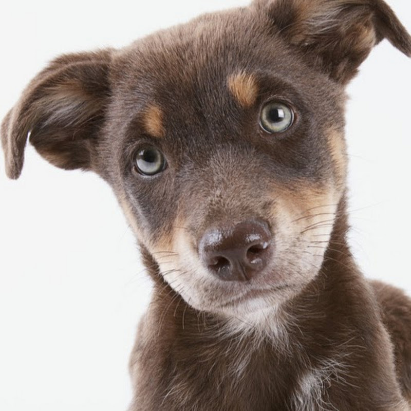
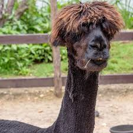
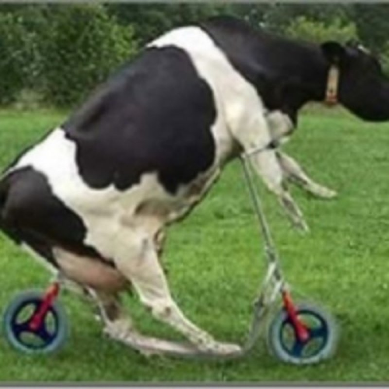

<script src="vendor/aframe/build/aframe.min.js"></script>
<script src='build/aframe-ar.js'></script>
<script>ARjs.Context.baseURL = 'three.js/'</script>
<!-- Script if a-marker is found (a-marker attributes ==> https://github.com/jeromeetienne/AR.js/tree/master/aframe) -->
<script>
	AFRAME.registerComponent('registerevents', {
		init: function () {
			var marker = this.el;

			marker.addEventListener('markerFound', function() {
				var markerId = marker.id;
				console.log('markerFound', markerId);
				// TODO: Add your own code here to react to the marker being found.
			});

			marker.addEventListener('markerLost', function() {
				var markerId = marker.id;
				console.log('markerLost', markerId);
				// TODO: Add your own code here to react to the marker being lost.
			});
		}
	});
</script>
<body>
	<a-scene embedded arjs='trackingMethod: best; detectionMode: mono_and_matrix; matrixCodeType: 3x3;' registerevents>
	<a-marker preset="custom" type='pattern' url='data/data/a.patt'>
		<a-box position='0 0.5 0' material='opacity: 0.5; side: double;color:red;'>
			<a-torus-knot radius='0.26' radius-tubular='0.05'>
				<a-animation attribute="rotation" to="360 0 0" dur="5000" easing='linear' repeat="indefinite"></a-animation>
			</a-torus-knot>
		</a-box>
	</a-marker>
	<!--<a-marker type='barcode' value='7'>
		<a-box position='0 0.5 0' material='opacity: 0.8; side: double;color:pink;'>
			<a-image width="1" height="1" src="#dogImage" position="0 1 0" rotation="-90 0 0" width="1" height="1"></a-image>
			
		</a-box>
	</a-marker>
	<a-marker type='barcode' value='6'>
		<a-box position='0 0.5 0' material='opacity: 0.8; side: double;color:green;'>
			<a-image width="1" height="1" src="#alpacaImage" position="0 1 0" rotation="-90 0 0" width="1" height="1"></a-image>
			
		</a-box>
	</a-marker>
		<a-marker type='barcode' value='5'>
			<a-box position='0 0.5 0' material='opacity: 0.8; side: double;color:red;'>
				<a-image width="1" height="1" src="#cowImage" position="0 1 0" rotation="-90 0 0" width="1" height="1"></a-image>
				
			</a-box>
		</a-marker>
		<a-marker type='barcode' value='4'>
			<a-box position='0 0.5 0' material='opacity: 0.6; side: double;color:blue;'>
				<a-image width="1" height="1" src="#goatImage" position="0 1 0" rotation="-90 0 0" width="1" height="1"></a-image>
				
			</a-box>
		</a-marker>-->
		<a-marker-camera preset='hiro'></a-marker-camera>
	</a-scene>
</body>
